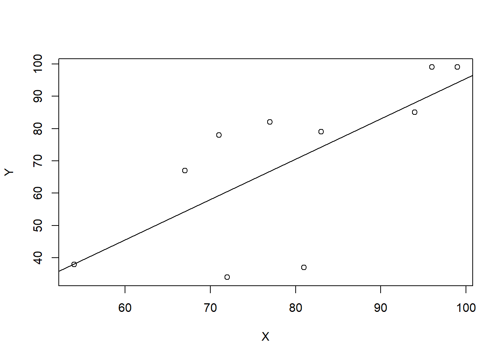

2 2nd Tutorial
2.1 Recap
Previously we discussed the least squared approach to estimate the slope and the bias parameters in the simple linear model. An important question arises here is to test how significant is our estimation and in order to assess that let us assume the error term is normally distributed with zero mean and constant variance \(\sigma^2\). We want to test \(H_0 : \beta_j = \hat{\beta}~~~ \text{vs.}~ ~~H_1 : \beta_{j}= \hat{\beta}\) at level \(\alpha\) where \(\hat{\beta}\) is some constant and \(j=0,1\).
The decision rule is to reject \(H_0\) if:
\[|T|=\lvert~\frac{\beta_j-{\hat\beta}}{SE(\hat\beta_j)}\lvert~> t_{n-2,\alpha/2}\]
Where \(SE()\) is the standard error of the parameter.
Recall that from the lecture note:
\[\begin{align}
&Var(\beta_1)=\frac{\sigma^2}{(n-1)S_{X'X'}} = \frac{\sigma^2}{\sum (x_i-\bar{x})2}\\
&Var(\beta_0)= \sigma^2 (\frac{1}{n}+\frac{\bar{x}^2}{\sum (x_i-\bar{x})2})
\end{align}\]
2.2 Exercises
Exercise 2.1 Go back to Exercise 1.3 and test the hypothesis that the yield is proportional to the amount of catalyst cubed.
Solution 2.1:
Now \(Var(\beta)=\frac{\sigma^2}{(n-1)S_{X'X'}}\)
\[(n-1)S_{X'X'}=\sum_{i=1}^{n}x'^2_i-\frac{(\sum_{i=1}^{n}x'_i)^2}{n}=0.33\]
While \(\sigma^2\) can be estimated by using the unbiased estimator \(s^2\),
\[s^2=\frac{1}{2}\sum_{i=1}^{n}(y'_i-\hat{y'_i})^2=0.0018\]
Hence \(SE(\hat{\beta})=\sqrt{Var(\hat\beta)}= 0.0739\).
Now to test \(H_0: \beta=3\) against \(H_q: \beta\neq3\)
Under \(H_0\), the T-test is \(-0.0932\)
So the p-value is \(P(|t_4| > 0.0932) = 2P(t_4 < −0.0932) = 0.9302\). There is therefore no evidence to reject \(H_0\) i.e. no evidence against a cubic relationship.
Exercise 2.2: The results of a class of 10 students on midterm marks \(X\) and on the final marks \(Y\) are as follows:
| X | 77 | 54 | 71 | 72 | 81 | 94 | 96 | 99 | 83 | 67 |
| Y | 82 | 38 | 78 | 34 | 37 | 85 | 99 | 99 | 79 | 67 |
- Calculate the regression line by hand.
- interpret the result.
- Construct \(95\%\) confidence intervals for the bias and the weight coefficients.
- Use the
lm()function in R to calculate regression line. - Use the
confint()in R to construct \(95\%\) confidence intervals for the model coefficients. - plot the regression line using the function
plot(). - If a student got in his midterm \(50\) what the expected mark in his final exam?
Solution 2.2: Now we can estimate the regression parameters using the least square approach so, \[\begin{align} &\hat{\beta_1} = \frac{\sum(y-\bar{y})(x-\bar{x})}{\sum(x-\bar{x})^2} = \frac{2268.8}{ 1818.4}= 1.24769 \\ &\hat{\beta_0}=\bar{y}-\hat{\beta}_1~\bar{x} = -29.26659 \end{align}\]
the interpretation of the coefficients is that the model expect that the final mark is increase by \(1.25\) when the midterm mark increase by ONE while \(\beta_0\) is the y-axis intercept.
To construct a \(95\%\) confidence interval we know that \[ |T|=\lvert~\frac{\beta_j-{\hat\beta}}{SE(\hat\beta_j)}\lvert \sim t_{n-2}\] It follows that a \(100(1 − α)%\) confidence interval for \(\beta_j\) is \[\hat{\beta_j} \pm SE(\hat\beta_j)\times~t_{n-2,\alpha/2}\] So as
\[\begin{align} &\sigma^2 = \frac{1}{n-2}~\sum~(y_i-\hat{y})^2 = \frac{1}{8}~\sum (y_i-(1.24769~x_i−29.26659))^2 = 347.855\\ &SE(\hat\beta_1) =\sqrt{\frac{\sigma^2}{\sum{(x_i-\bar{x})^2}}} = \sqrt{\frac{347.855}{1818.4}}=\sqrt{0.1912973}=0.4373755\\ &SE(\hat{\beta_0})=\sqrt{\sigma^2~(\frac{1}{n}+\frac{\bar{x}}{\sum{(x_i-\bar{x})^2}})}= \sqrt{347.855(\frac{1}{8}+\frac{6304.36}{1818.4})} = 35.34811 \end{align}\]
Therefore, the \(95\%\) confidence intervals for \(\beta_0\) and \(\beta_1\) are: \[\begin{align} \beta_0 &\in (-110.495,51.9621)\\ \beta_1 &\in (0.239,2.256) \end{align}\]
In R we can use the build-in function lm() as follow:
##
## Call:
## lm(formula = Y ~ X)
##
## Residuals:
## Min 1Q Median 3Q Max
## -34.796 -2.289 4.727 11.626 18.681
##
## Coefficients:
## Estimate Std. Error t value Pr(>|t|)
## (Intercept) -29.2666 35.2249 -0.831 0.4302
## X 1.2477 0.4374 2.853 0.0214 *
## ---
## Signif. codes: 0 '***' 0.001 '**' 0.01 '*' 0.05 '.' 0.1 ' ' 1
##
## Residual standard error: 18.65 on 8 degrees of freedom
## Multiple R-squared: 0.5043, Adjusted R-squared: 0.4423
## F-statistic: 8.138 on 1 and 8 DF, p-value: 0.02139Then confint() can be used to find \(95\%\) confidence interval as follow:
## 2.5 % 97.5 %
## (Intercept) -110.4953424 51.96213
## X 0.2391006 2.25628
To predict the final mark for the student whom midterm mark \(55\)
## 1
## 39.356362.3 Coursework
1 . The computer repair data gives the length of time of service calls in minutes \(Y\) and the number of components repaired in a computer \(X\). Some summary measures for this data are: \[\begin{align} &n=14\\ &\sum x_i=84\\ &\sum y_i=1361\\ &S_{XX} = 114\\ &S_{YY} = 27768.26\\ &S_{XY} = 1768 \end{align}\]
Find the point estimate of the intercept and slop to model the length of service call as a linear function of the number of units serviced.
Give 95% confidence interval for the slope and interpret.